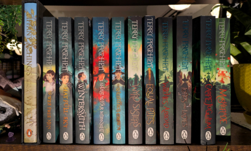

My Tiffany Aching cosplay for the 2024 Discworld Convention.
The hat, apron, and frying pan are all made completely by me.
Photo credit: Verea Miller
What is Discworld?
Discworld is a universe created by Terry Pratchett
There are 6 "sub-series" that take place on the Disc, as well as a few stand-alone books.
In total, there are 41 main novels in the Discworld Series.
The Disc is a satirical version of the real world, where book tropes are used and subverted.
There is elaborate lore within the Discworld universe. For example, the stories all take place on the Disc, which is a flat world carried on the back of 4 elephants who ride on the back of a turtle that is swimming through space.
Why do I love Discworld?
Terry Pratchett is an incredible wordsmith, and so each Discworld book is a joy to read.
The use of satire in the books is a though-provoking mirror of the real world, and allows you to consider other perspectives you might not have thought of otherwise, through the lens of a fantasy world.
Despite the undeniable fantasy themes throughout the book, the book never feels bigger-than-life or difficult to get through, which I struggle with in some parts of the fantasy genre.
The characters in Discworld feel real and relateable, despite often being based on literary cliches. They have real flaws and motivations.
The Discworld community, and fans of Terry Pratchett in general are some of the nicest and most passionate people I've ever met.
Terry Pratchett is famous for his footnotes, which are sometimes half a page long and are often only tangentally related to the matter at hand; I can't help but love a kindred spirit.

These are the Discworld books I currently own physical copies of.
I also own the whole series digitally, but I want to collect all the physical copies to display.